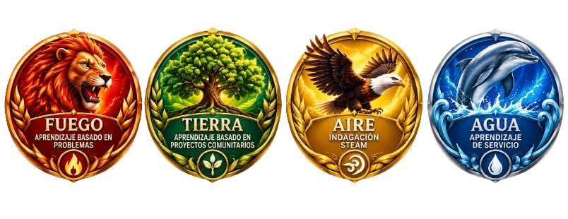

Guia para la Revelacion
- entrar a la URL de la pagina.
(revelacion-rouge.vercel.app)
- elegir tu Rol
(Alumno o Docente/personal)
- Ingresar tu numero de control
(Lo puedes encontrar en tu Credencial, Boleta de calificaciones, pedirselo al tutor de tu grupo o pedirla en control Escolar.)
- Espera a que el temporizador llegue a 00:00:00:00
(es decir, el Lunes 19 a las 11:00 AM)
- Da click en el Sello rojo del Sobre
- ¡Mira tu fraternidad asignada segun tus respuestas!
(revelacion-rouge.vercel.app)
(Alumno o Docente/personal)
(Lo puedes encontrar en tu Credencial, Boleta de calificaciones, pedirselo al tutor de tu grupo o pedirla en control Escolar.)
(es decir, el Lunes 19 a las 11:00 AM)
